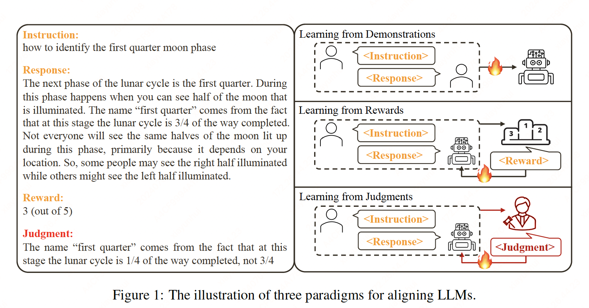
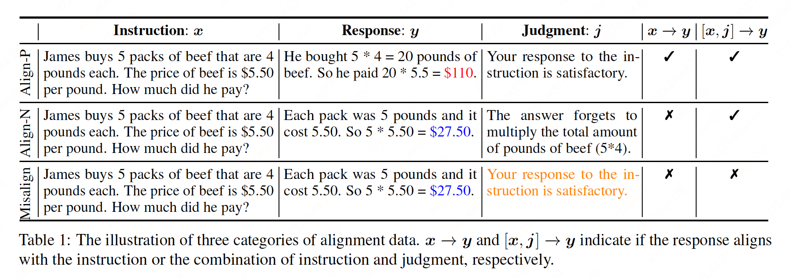
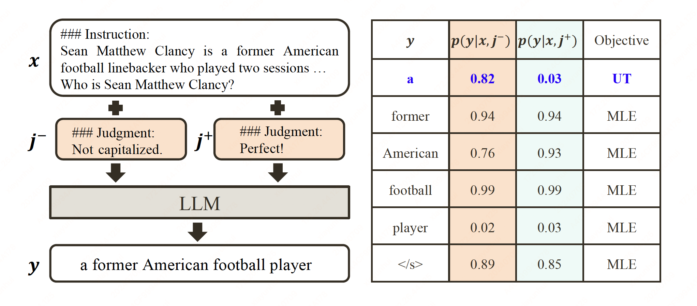

Aligning Language Models with Judgments#
Note
In contrast to previous research that aligns LLMs with scalar rewards, we present the first systematic exploration of alignment through language feedback.
Introduction#
Figure 1 shows three typical paradigms to achieve alignment.
The most straightforward one is learning from demonstrations, wherein demonstrations of desired responses to a set of instructions are collected to fine-tune LLMs. However, the performance gains diminish rapidly when scaling up the data size.
Learning from feedback offers a more scalable approach. One key advantage of feedback over demonstrations is that feedback can convey both positive and negative aspects.
Prior research on learning from feedback primarily focuses on value feedback.
Language feedback (i.e., judgment) is another kind of feedback.

In this study, we present an extensive investigation of potential methods that can be adapted for aligning LLMs with judgments. To facilitate a comprehensive aligning process, we propose a novel framework, Contrastive Unlikelihood Training (CUT), that enables fine-grained inappropriate content detection and correction based on judgments.
Problem Setting#
Suppose that there is a set of instruction-response-judgment triplets \((\mathbf{x}, \mathbf{y}, \mathbf{j})\) where where the instruction \(\mathbf{x}=[x_1,\dots,x_M]\), the response \(\mathbf{y}=[y_1,\dots,y_N]\), and the judgement \(\mathbf{j}=[j_1,\dots,j_Q]\) are token sequences of length \(M\), \(N\), and \(Q\), respectively. The judgment provides an analysis of the strengths and weaknesses of the response.
Depending on whether the responses \(\mathbf{y}\) are from the LLM to be aligned, the learning process can be classified into two distinct types: offline alignment and online alignment. In offline alignment, the target LLM learns from an off-the-shelf, model-agnostic dataset. In online alignment, the target LLM reflects on its own outputs through direct interactions with a judge. This online alignment process can be conducted iteratively.
Incorporating Judgments for Alignment#
We call an instruction-response pair “aligned” if the response follows the instruction faithfully and satisfies human expectations \(\mathbf{x}\to\mathbf{y}\). Assuming the task is to generate a response that intentionally fulfills the judgment, it can be inferred that the response always aligns with the combined input of instruction and judgment \([\mathbf{x}, \mathbf{j}] \to \mathbf{y}\). Based on the idea, we construct three types of alignment data.

Align-P: The LLM produces a satisfactory response \(\mathbf{y}\) to the instruction \(\mathbf{x}\). Therefore, a positive judgment \(\mathbf{j}\) is conferred. The response \(\mathbf{y}\) is aligned with the instruction \(\mathbf{x}\) as well as the combined input \([\mathbf{x}, \mathbf{j}]\).
Align_N. The LLM makes some mistakes in its generation, resulting in an unsatisfactory response \(\mathbf{y}\). Consequently, a negative judgment \(\mathbf{j}\) details the corresponding critiques. For Align-N, \(\mathbf{y}\) is not aligned with original instruction \(\mathbf{x}\). However, when considering \(\mathbf{x}\) and \(\mathbf{y}\) as a whole, \(\mathbf{y}\) is indeed aligned with the combined input \([\mathbf{x}, \mathbf{j}]\).
Misalign. The authentic (真实的) negative judgment in Align-N is substituted with a fake positive judgment \(\mathbf{j}\). In this case, the response \(\mathbf{y}\) is not aligned with either the original instruction \(\mathbf{x}\) or the combination of instruction and judgment \([\mathbf{x}, \mathbf{j}]\).
Learning from Contrasting#
Align-N vs. Misalign: Opposite in the task of \([\mathbf{x}, \mathbf{j}]\to\mathbf{y}\). Thanks to the strong in-context learning capabilities of LLMs, the alignment flip from Align-N (aligned) to Misalign (misaligned) is often accompanied by decreased generation probabilities of the response, particularly for tokens that exhibit a strong correlation with the authentic negative judgment. For example, the LLM assigns a considerably higher probability for “a” when taking the authentic negative judgment \(\mathbf{j}^{−}\) instead of the fake positive judgment \(\mathbf{j}^{+}\) as additional input.

We consider the tokens that display a substantially increased generation probability when conditioned on \(\mathbf{j}^{−}\) compared to \(\mathbf{j}^{+}\) as inappropriate tokens:
where \(\lambda\) is a hyperparameter to tradeoff the precision and recall of detecting inappropriate tokens.
We apply the UT (Unlikelihood Training) on the identified inappropriate tokens for pushing the LLM to explore alternative generations, for other tokens, we use the standard MLE loss:
where \(\alpha p(y_t|\mathbf{y}_{<t},\mathbf{x},\mathbf{j}^{-})^{\gamma}\) is the dynamic weight term. \(\alpha\) and \(\gamma\) are two hyper-parameters.
Align-P vs. Align-N: Despite both Align-P and Align-N are aligned in terms of \([\mathbf{x}, \mathbf{j}]\to\mathbf{y}\), only Align-P is aligned when solely considering the instruction \(\mathbf{x}\to\mathbf{y}\). Essentially, it suggests that the LLM should output different responses depending on whether a negative judgment is incorporated or not. We train on this comparison with the following MLE objective:
where \(\mathbb{1}(\mathbf{x}\to\mathbf{y})\) is an indicator function that returns 1 if \(\mathbf{x}\) and \(\mathbf{y}\) are aligned, and 0 otherwise.
Finally, the overall loss of CUT (Contrastive Unlikelihood Training) combines the losses from the two contrasts: \(L_{\text{CUT}} = L_1 + L_2\).